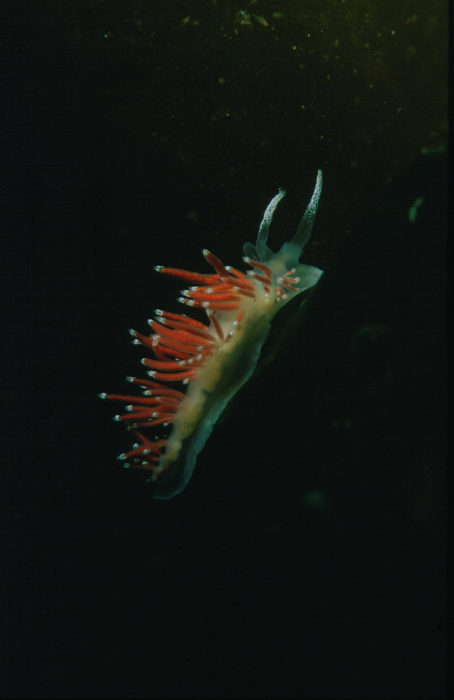

Coryphella gracilis
|  |
Het zacht-gedoornde zeenaaktslakje (Coryphella gracilis) dankt de rode kleur van zijn cerata aan een klier die spijsverteringssappen uitscheidt. Soms komen groene exemplaren voor. Het slakje wordt ongeveer 1 cm lang en voedt zich met name met Euendrium soorten. |
| © Arne Poortinga |